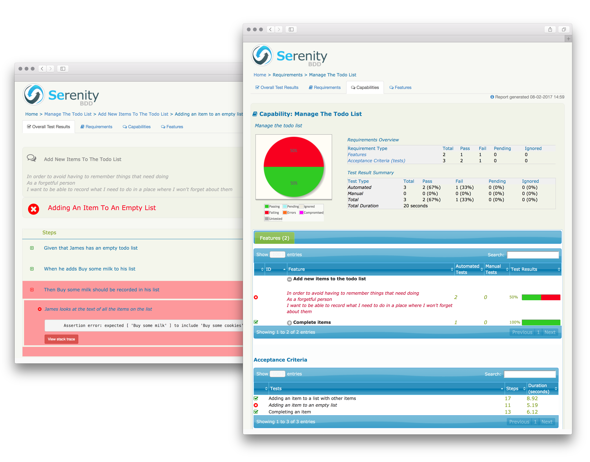

Overview
Serenity/JS is an acceptance testing library that improves and expands the capabilities of Protractor-based test suites.
It enables you and your team to write readable, user-centred test scenarios implementing the Screenplay Pattern and applying proven software development practices to create highly scalable test suites and produce in-depth, illustrated test execution reports accessible to both technical and non-technical audience.
